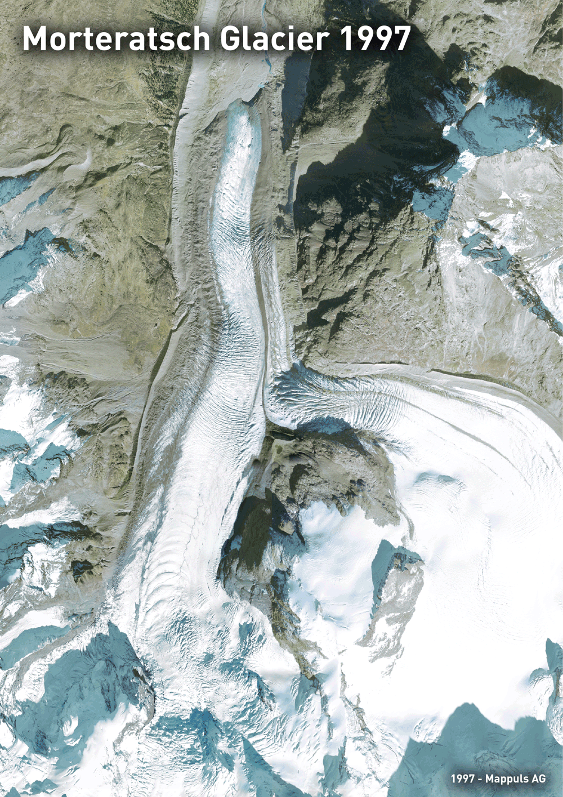
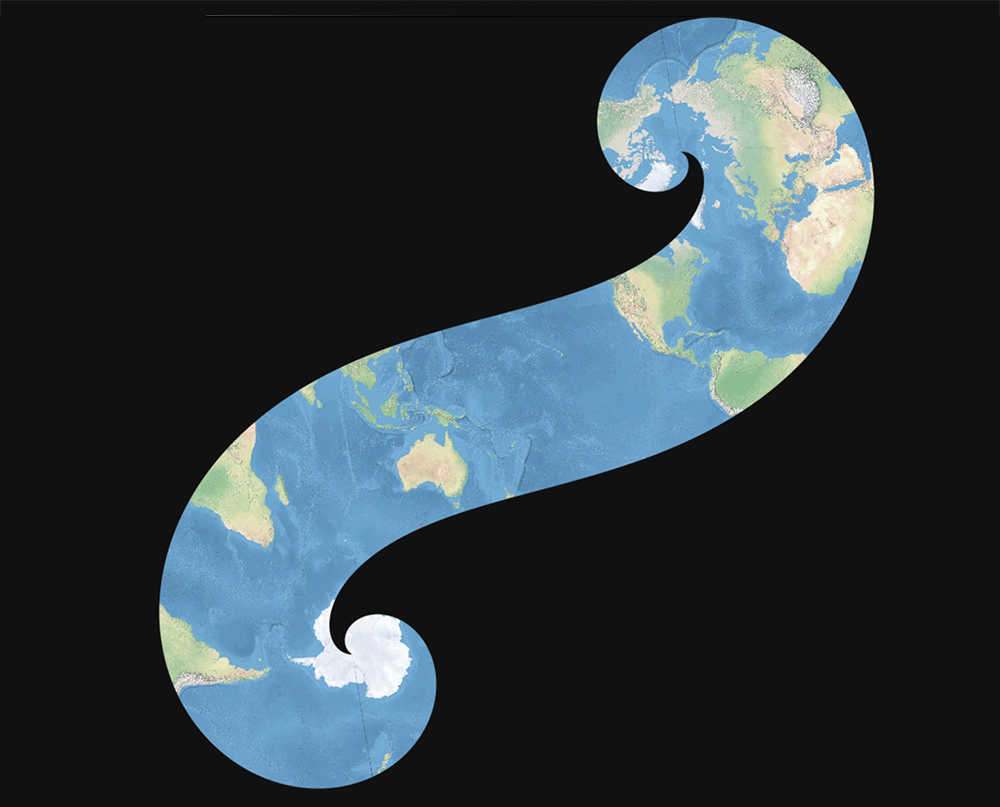

01 - Points

02 - Lines

03 - Polygons

04 - Hexagons

05 - Data challenge 1: OpenStreetMap

06 - Red

07 - Green

08 - Blue

09 - Monochrome

10 - Raster

11 - 3D

12 - Population

13 - Data challenge 2: Natural Earth

14 - Map with a new tool

15 - Map made without using a computer

16 - Urban/rural

17 - Land

18 - Water

19 - Island(s)

20 - Movement

21 - Elevation

22 - Boundaries

23 - Data challenge 3: GHSL Global Human Settlement Layer

24 - Historical map

25 - Interactive map

26 - Choropleth map

27 - Heatmap

28 - The Earth is not flat

29 - NULL

30 - Metamapping Day